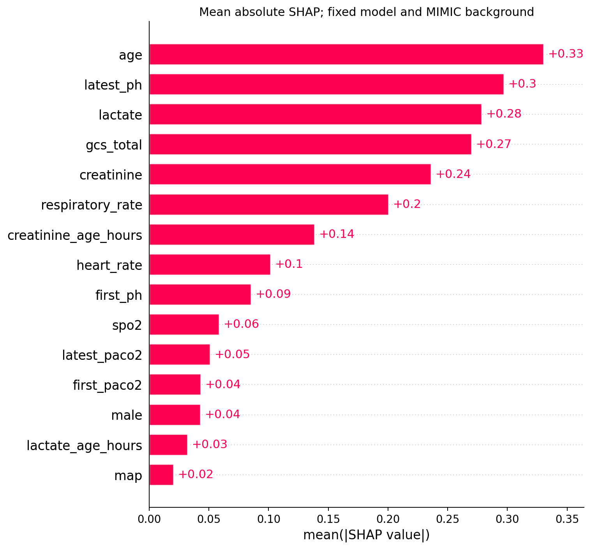

RESPIRATORY & CRITICAL CARE
比较血气历史与最新状态
估计12/24小时节点之后、本次住院内死亡的概率。适用于首份动脉PaCO₂>45 mmHg的成人ICU研究人群。
载入本机研究模型
选择随本研究交付的JSON模型包。文件和临床输入只在浏览器内存中使用。
尚未载入
研究证据
MIMIC开发 · eICU冻结验证
24小时H模型外部AUC
0.7542,506次住院 · 154家医院
首次血气的ΔBrier
+0.0002795%区间 −0.00110至+0.00169
24小时备用流程更新比例
23.06%2,506 / 10,865次住院
主结果和12小时扩展的区间均包含0，现有数据尚未确认首次血气的外部预测增量。网页提供标准化输入、模型对照和可复现计算。
研究总体SHAP解释
冻结H24完整概率流程的logit归因；eICU预设随机128例。这是研究总体解释，当前输入的个体解释另需专门验证。

适用范围与数据质量
首份动脉血气位于入ICU0–6小时，PaCO₂>45 mmHg；24小时复评位于18–24小时，12小时复评位于8–12小时。估计对象为节点后该次住院内死亡。未建立12小时无复评备用模型。
11项共享临床背景包含缺失处理。主队列MIMIC GCS缺失79.9%、eICU乳酸缺失50.8%；eICU通气支持类别未知91.3%。节点与信息可用时间依据原始记录代理判定。
派生模型按来源访问条件在本地管理。MIMIC-IV来源规则 · eICU来源